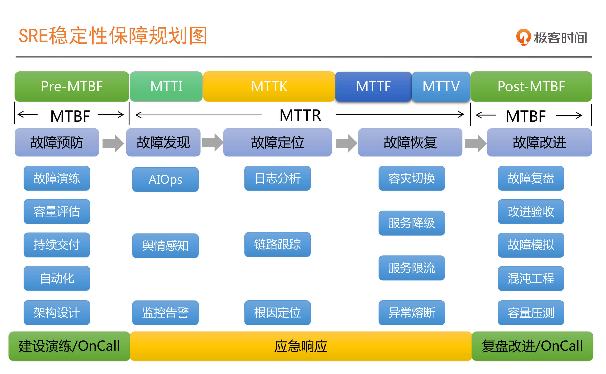
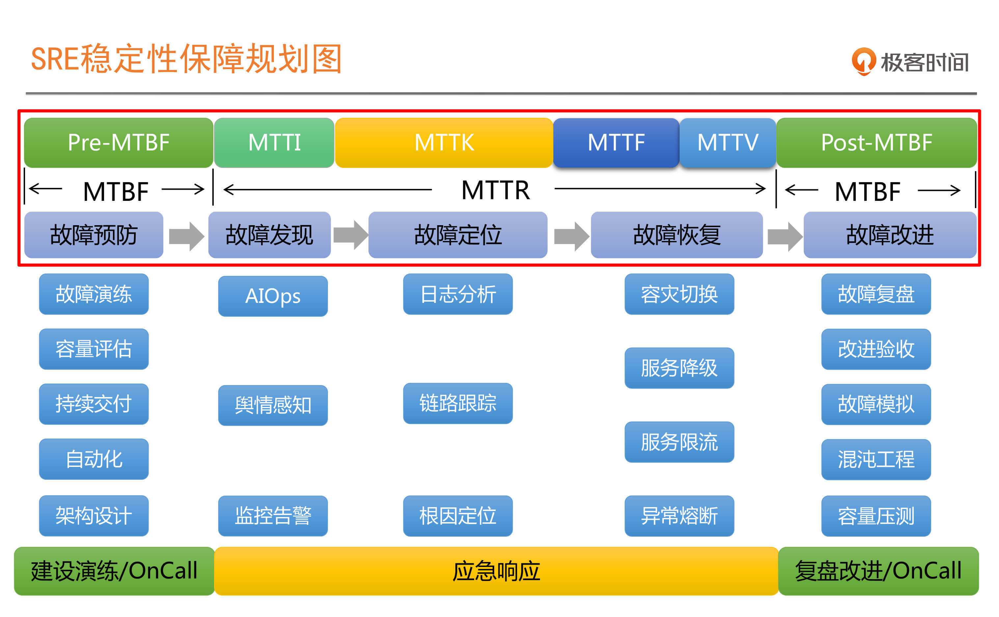
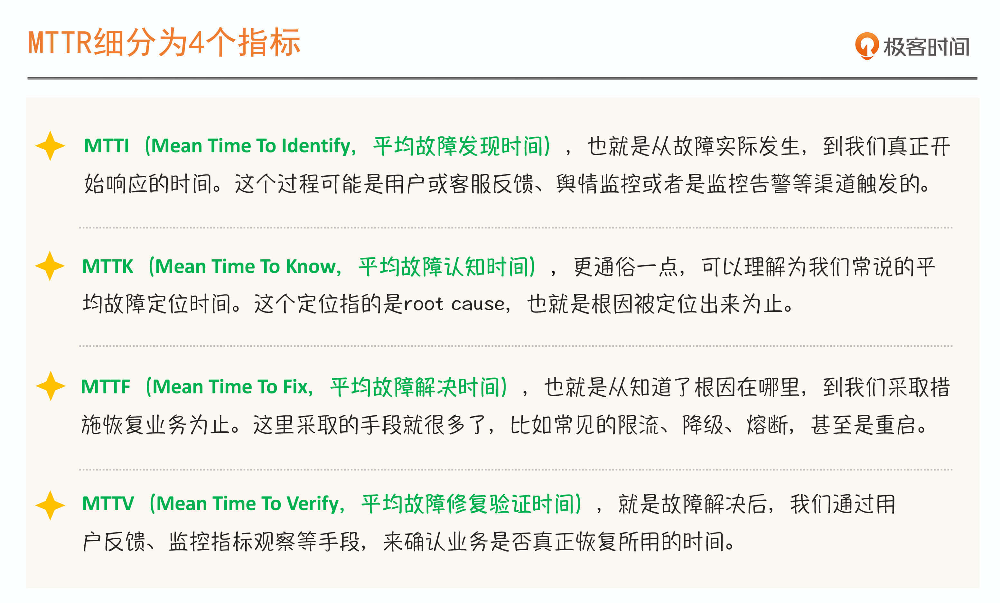

- 00 开篇词 SRE是解决系统稳定性问题的灵丹妙药吗？.md.html
- 01 SRE迷思：无所不能的角色？还是运维的升级？.md.html
- 02 系统可用性：没有故障，系统就一定是稳定的吗？.md.html
- 03 SRE切入点：选择SLI，设定SLO.md.html
- 04 错误预算：达成稳定性目标的共识机制.md.html
- 05 案例：落地SLO时还需要考虑哪些因素？.md.html
- 06 故障发现：如何建设On-Call机制？.md.html
- 07 故障处理：一切以恢复业务为最高优先级.md.html
- 08 故障复盘：黄金三问与判定三原则.md.html
- 09 案例：互联网典型的SRE组织架构是怎样的？.md.html
- 10 经验：都有哪些高效的SRE组织协作机制？.md.html
- 答疑 没什么能阻挡你拓展边界的渴望.md.html
- 结束语 聊聊我的SRE落地心路历程.md.html
- 捐赠
01 SRE迷思：无所不能的角色？还是运维的升级？
你好，我是赵成。
作为这个课程的第一讲，我先从实践的角度，和你聊聊应该怎么理解SRE。
为什么要强调是实践的角度呢？
开篇词里我们就提到过，有人认为SRE就是一个岗位，而且是一个具备全栈能力的岗位，只要有这么一个人，他就能解决所有稳定性问题。这还只是一种理解，而且这个理解多是站在管理者的角度。
也有人站在运维人员的角度，认为做好SRE主要是做好监控，做到快速发现问题、快速找到问题根因；还有人站在平台的角度，认为做好SRE要加强容量规划，学习Google做到完全自动化的弹性伸缩；甚至还有人认为，SRE就是传统运维的升级版，把运维自动化做好就行了。
你看，其实不同的人站在不同的角度，对SRE的理解就会天差地别，但是好像又都有各自的道理。
所以，我特别强调实践的角度，我们不站队，就看真实的落地情况。我总结了一下从实践角度看SRE的关键点，就一个词：体系化。SRE是一套体系化的方法，我们也只有用全局视角才能更透彻地理解它。
好了，下面我们就一起来看怎么理解SRE这个体系化工程。
SRE，我们应该怎么来理解它？
我先给你分享一张图，这是结合我自己团队的日常工作，做出来的SRE稳定性保障规划图。- - 我们最初画这张图是为了提高故障处理效率，将每个阶段可以做的事情填了进去，并在实践中不断补充完善，最终形成了我们探索SRE的框架图。你应该也发现了，这里面很多事情都很常见，比如容量评估、故障演练、服务降级、服务限流、异常熔断、监控告警等等。
这就是为什么我一直给你打气，说SRE并不神秘。学习SRE，我们可以有非常熟悉的抓手。但是，我们不能停留在向Google或其他大厂学习具体的技术经验上，而是更应该学习如何将这些技术有机地结合起来，形成一套稳定性体系，让体系发挥出力量，告别只发挥某项技术的能力。
同时，结合这些具体的事情，你应该明白，这些工作并不是某个人、某个角色，甚至是某个团队就可以单枪匹马完成的。比如这里的很多事情要依赖运维自动化，像容量扩缩容，必然会与运维团队有交集；如果做得再弹性一些，还需要与监控结合，就要与监控团队有合作；同时还可能依赖DevOps提供持续交付、配置变更，以及灰度发布这些基础能力，就要与开发和效能团队有交集。
这些能力之间的相互依赖，就决定了从职能分工上，SRE体系的建设绝不是单个岗位或单个部门就能独立完成的，必然要求有高效的跨团队组织协作才可以。
所以，不要想着设定一个SRE岗位，就能把稳定性的事情全部解决掉，这明显不现实。你应该从体系的角度出发，设置不同的职能岗位，同时还要有让不同角色有效协作的机制。
从另一个角度来讲，如果当前我们的稳定性建设还仅仅聚焦在某个或某些具体的技术点上，每个角色和团队之间的工作相对还是独立、各自为战的，那就说明SRE体系和组织的真正威力还没有发挥出来。
所以，如果你已经是这些领域的实践者，比如你是一个运维工程师，或者是一位监控开发工程师，又或者是一个DevOps开发工程师，我建议你除了负责当前的事情外，应该更多地关注一下SRE全局视图。这样会帮助你深入了解SRE岗位所需要的技术能力，进而提升你的平台架构能力。
要知道，如果严格遵循Google的要求，SRE岗位对技术要求是非常高的。只有具备了全面的技术能力，拥有了全局架构的思维，你才会在SRE的道路上走得更远。
总结一下，从实践角度来看，SRE的力量不能通过一个岗位、一个或几个技术就发挥出来。SRE是一个体系化工程，它需要协同多个部门、多项技术。
做好SRE的根本目的是什么？
认识到SRE是个体系化的事儿还不够，我们还可以“以终为始”，看看SRE最后要达成什么样的目标，以此来加深对它的理解。
SRE做了这么多的事情，最后的目的是什么呢？
这个答案很明显嘛，就是提升稳定性。但是怎样才算提升了稳定性呢？要回答这个问题，我们有必要来讨论下稳定性的衡量标准。
从业界稳定性通用的衡量标准看，有两个非常关键的指标：
- MTBF，Mean Time Between Failure，平均故障时间间隔。
- MTTR，Mean Time To Repair， 故障平均修复时间。
还来看前面的SRE稳定性保障规划图，你会发现我们把整个软件运行周期按照这两个指标分成了两段。通俗地说，MTBF指示了系统正常运行的阶段，而MTTR则意味着系统故障状态的阶段。- - 到了这里，我们也就明白了，如果想提升稳定性，就会有两个方向：提升MTBF，也就是减少故障发生次数，提升故障发生间隔时长；降低MTTR，故障不可避免，那就提升故障处理效率，减少故障影响时长。
你想，如果我们把故障发生时间的间隔变长，并将故障影响的时间减少，系统稳定性是不是自然就提升了呢？答案是显然的。
从SRE稳定性保障规划图中，可以看出MTTR可以细分为4个指标：MTTI、MTTK、MTTF和MTTV。我把它们的具体解释做了一张图，你可以保存下来，有时间就琢磨一下。这4个指标，你要烂熟于心。- - 现在，我们再来看SRE稳定性保障规划这张图，你就会理解，为什么要把所做的事情分组分块呈现。目的就是区分清楚，我们做的任何一件事情、开发的任何一套系统、引入的任何一个理念和方法论，有且只有一个目标，那就是“提升MTBF，降低MTTR”，也就是把故障发生时间的间隔变长，将故障影响的时间减少。
比如，在Pre-MTBF阶段（无故障阶段），我们要做好架构设计，提供限流、降级、熔断这些Design-for-Failure的服务治理手段，以具备故障快速隔离的条件；还可以考虑引入混沌工程这样的故障模拟机制，在线上模拟故障，提前发现问题。
在Post-MTBF阶段，也就是上一故障刚结束，开启新的MTBF阶段，我们应该要做故障复盘，总结经验，找到不足，落地改进措施等。
在MTTI阶段，我们就需要依赖监控系统帮我们及时发现问题，对于复杂度较高和体量非常大的系统，要依赖AIOps的能力，提升告警准确率，做出精准的响应。
同时AIOps能力在大规模分布式系统中，在MTTK阶段也非常关键，因为我们在这个阶段需要确认根因，至少是根因的范围。
你看，我们做了很多事情， 新的理念和方法出来后也特别愿意尝试，就是因为有明确的目标，所有工作的开展都是围绕这个核心目标而去的。
好了，按照以终为始的思路，SRE要实现的目标就是“提升MTBF、降低MTTR”，从这个角度出发，我们再次认识到一定要把SRE作为一个体系化的工程来建设，因为单纯在某些技术点上发力是没有多大意义的。
总结
今天我要分享的内容就到这里了。总结一下，你需要记住下面这两点。
第一，我们需要从全局的角度去理解SRE。SRE一定是靠整个技术和组织体系发挥作用的，单纯从某个技术点或环节出发，都无法呈现出效果，也就是说SRE一定要从全局考虑，体系一定要“配套”。
第二，SRE的目的，本质上是减少故障时间，增加系统正常运行时间，也就是 “减少故障，提升MTBF；同时，提升故障处理效率，降低MTTR”。SRE要做的所有事儿，都是为这两个目标服务的。
我想无论你是团队负责人、架构师，还是一线的技术专家，有了这样的全局视角后，就会知道接下来应该从何入手，以及如何与其他团队协作来构建这样的体系。
思考题
开篇词中我们提到过大家对SRE的困惑，比如SRE和DevOps都是很好的方法论，我应该怎么选？到底哪个更适合我？今天我们讲了SRE应该怎么理解，我想对这个问题你应该有答案了。那就请你来说一说，SRE和DevOps到底哪个更适合你？它们有什么区别和相同点？
请你在留言区说出自己的思考，也欢迎你把今天的内容分享给身边的朋友，和他一起讨论。
我们下节课见。
© 2019 - 2023 Liangliang Lee. Powered by gin and hexo-theme-book.